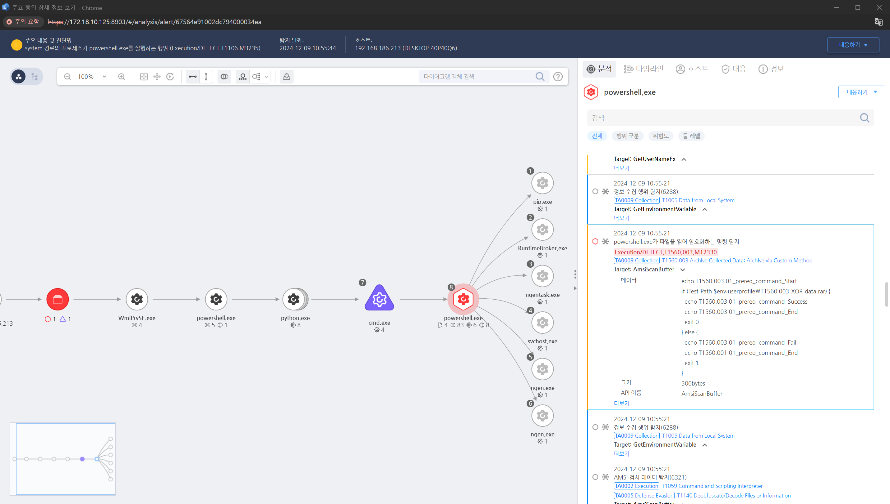

T1560.003 수집된 데이터 보관 - 사용자 지정 방법
D3FEND
MITRE ATT&CK 액션을 기준으로 대응 방안을 작성
Detection
파일을 읽어 암호화하는 명령을 탐지하거나 PE 파일의 정적 정보(OP Code)를 이용하여 특정 암호화 루틴을 탐지합니다.
Detection(EDR)

Response
- Windows 이벤트 로그 모니터링:
파일 생성 및 명령 실행 이벤트와 관련된 사용자 정의 압축 또는 아카이브 명령을 탐지합니다.
- SIEM 및 로그 분석:
SIEM 도구에서 사용자 정의 아카이브 명령을 탐지하기 위한 규칙 생성합니다.
- 파일 무결성 검사:
무결성 모니터링 도구(예: Tripwire)를 활용하여 민감한 데이터가 아카이브 파일로 변환되는 활동을 감지합니다.
Mitigations
파일 및 폴더 접근 제어
- 중요한 파일 및 디렉토리에 대한 접근 권한을 최소화하고 네트워크 공유 및 로컬 경로에 대해 강력한 접근 제어를 적용합니다.
DLP(Data Loss Prevention) 솔루션 배포
- Microsoft Information Protection, Symantec DLP 등의 DLP 솔루션을 사용하여 민감한 데이터가 비인가된 방식으로 아카이브되거나 전송되는 것을 차단합니다.
비표준 압축 도구 차단
- AppLocker 또는 WDAC(Windows Defender Application Control)를 사용하여 비표준 압축 도구 실행을 제한합니다.
파일 형식 필터링
- ZIP, RAR, 7z 등의 아카이브 파일 생성을 제한하거나, 감시 목록에 추가하여 활동을 모니터링합니다.
스크립트 실행 제한
- PowerShell 및 CMD 스크립트의 실행 정책을 강화합니다.
네트워크 전송 제어
- 민감한 파일이 전송될 가능성이 있는 프로토콜(FTP, HTTP, SMB 등)을 감시하거나 차단합니다.
Affected Techniques
Action 실행시 함께 영향을 받는 다른 Techniqes
| ATT&CK |
| T1560.003 |
| T1027.013 |
| D3FEND |
| D3-FAPA File Access Pattern Analysis |